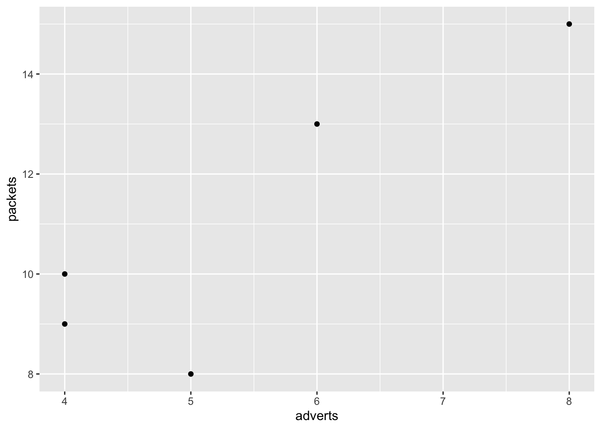
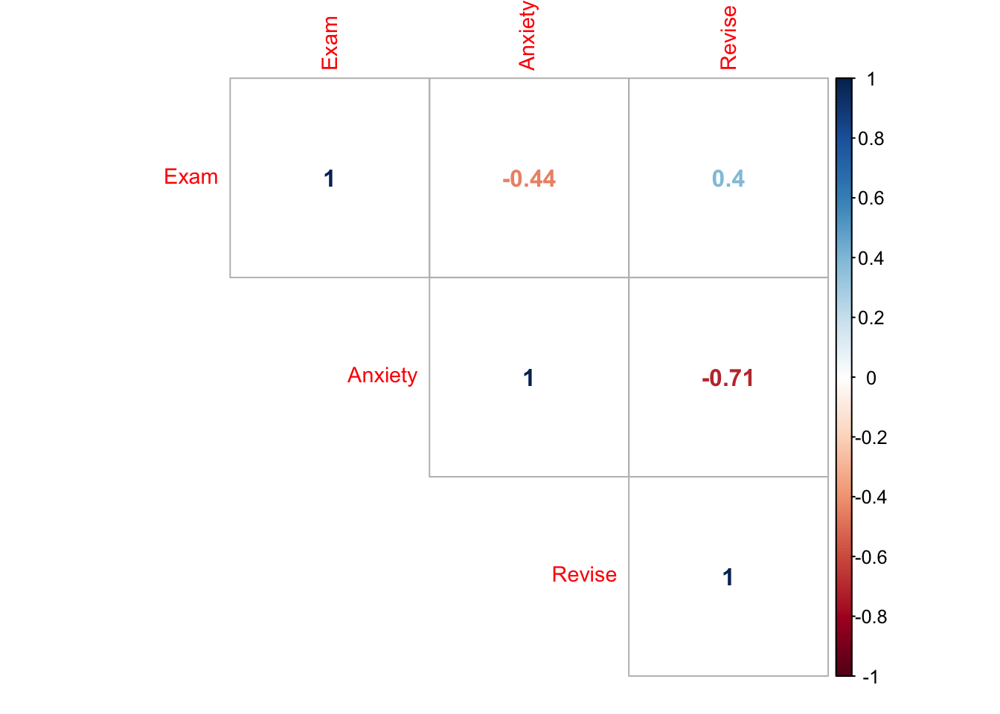
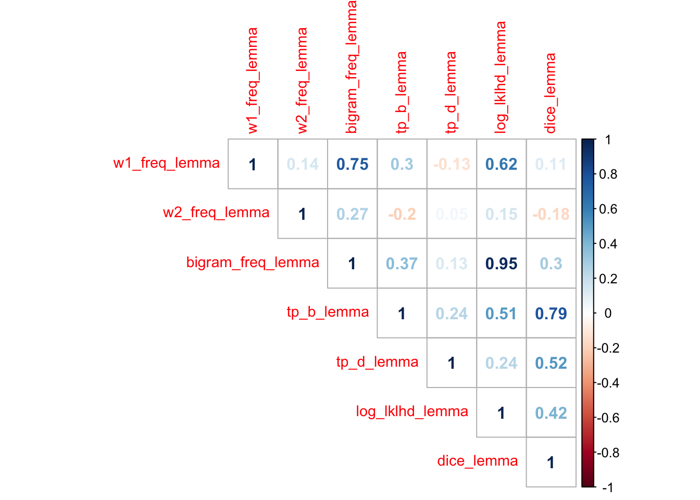
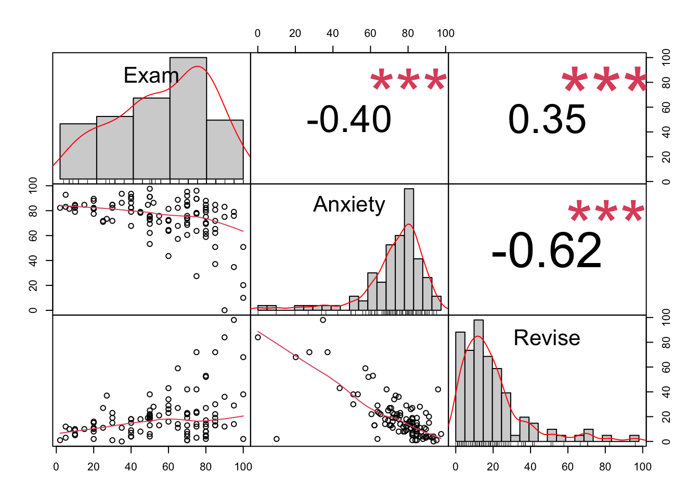
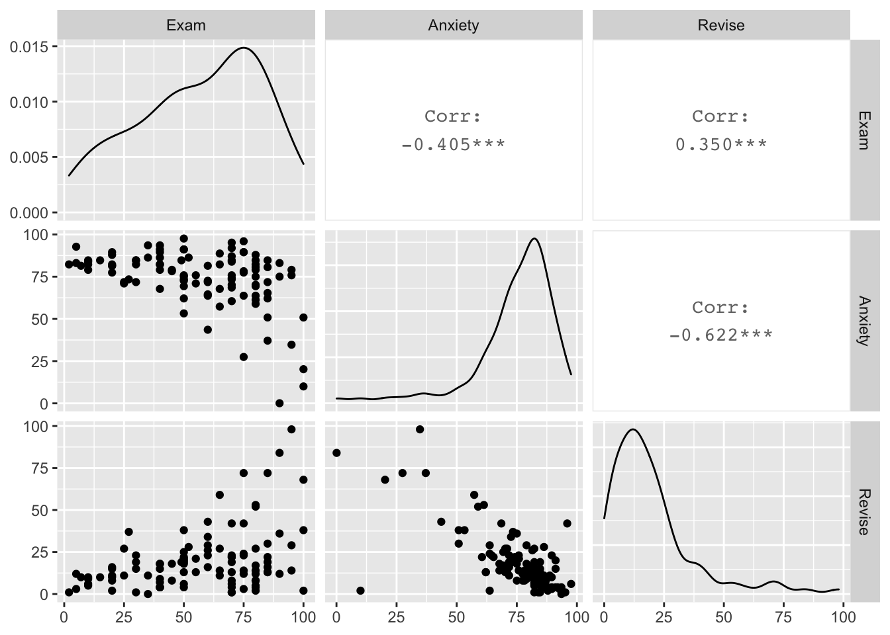
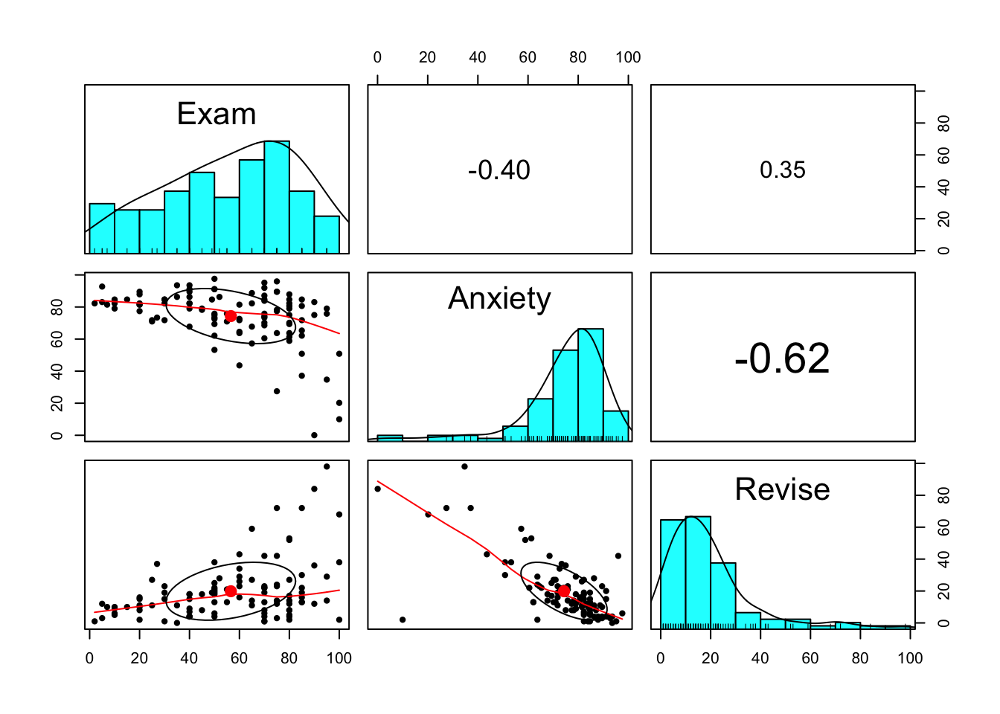

Notes based directly on Andy Field’s Discovering Statistics Using R Chapter 6.
Correlation shows how whether and how strongly two variables are related, i.e. as one increase, does the other increase proportionally? Does it decrease? Or is there no relationship?
The covariance between two variables looks at each point’s variation from the mean of that variable, (i.e. it checks if the value of Value X of Variable A differs from the mean of Variable A in the same or exactly the opposite way as Value X of Variable B differs from the mean of Variable B).
To test if the covariance goes in the same direction (positive) or the opposite direction (negative), the two deviations are multiplied together: If the result is positive (either by multiplying two positives or two negatives), the variables covary positively. If it is negative (one is positive and the other is negative), the variables covary negatively.
Problem: No standard measurement/depends on the scale of the variables. Thus, we cannot compare covariances between different datasets on different scales.
Solves the problem of standardization by measuring covariance in terms of standard deviation.
A correlation coefficient of 1 means that as one variable increases, the other increases by a proportionate amount. (-1 means one increases while the other decreases.) A coefficient of 0 means there is no linear relationship, as one changes the other stays the same.
The significance of a correlation coefficient can be tested wth a t-statistic with N-2 degrees of freedom (or by transforming into a z-score).
Correlation coefficient squared: the amount of variability in one variable that is shared by the other. Describes how much of the variance is described by the variable of interest.
i.e. If the correlation coefficient between Exam (score) and Anxiety is -0.441, then this squared is 0.194. Thus, Rsquared = .194, and Anxiety shares 19.4% of the variance in exam scores. This does not mean that it caused this variance.
This can easily be calculated with cor(data)^2 (*100 for the percentages).
cor(examData2) ^2 #now the output is showing the shared variance (the coefficient of determination)## Exam Anxiety Revise
## Exam 1.0000000 0.1944752 0.1573873
## Anxiety 0.1944752 1.0000000 0.5030345
## Revise 0.1573873 0.5030345 1.0000000Third-varaible problem: something else might be responsible for both changes Direction of causality: can’t say which variable is causing the other to change
The covariance is divided by the standard deviations (of the two variables, multiplied together), thus giving a result in standard deviation units. This always lands betwen -1 and 1.
Assumptions: interval data, normal distribution (unless one of the variables is a binary categorical variable)
Also commonly used for effect size (small effect = .10, describing 1% of the variance, medium effect = .30, describing 9% of the variance, large effecft = .5, describing 50% of the variance)
First RANKS the data, then applies Pearson’s equation to the ranks.
Can be used for ordinal & non-normally distributed data.
First RANKS the data, then applies Pearson’s equation to the ranks. Used for SMALL SAMPLE SIZES with TIED RANKS.
Can be used for ordinal & non-normally distributed data.
Bivariate correlation shows how two variables covary.
Partial correlation controls for one or more additional varaibles. This controls for the effect of the third variable on BOTH other variables. Ex: Exam grade, Anxiety and Revision (the grade is affected by anxiety, but also by revision; likewise, anxiety is also affected by revision time)
Semi-partial or part correlation controls for one or more additional variables, but only for the effect they have on ONE of the variables. This is used when explaining the variance in the outcome from a set of predictor variables.
Point biserial correlation is used for dichotomous categorical variables (i.e. you are either pregnant or not pregnant, never “a bit pregnant”). This can be done with cor.test() with the dichotomy coded as 1 and 0 (though note that the direction of the effect directly reflects which vaiable is coded as 1 and which is coded as 0, thus is not theoretically relevant)
Biserial correlation is used for binary categorical variables that exist on a continuum (i.e. passing and failing an exam). This is done with polycor::polyserial() Ex: polyserial(catData$time, catData$gender)
If you want to compare correlation coefficients between different groups (i.e. is the correlation significantly different in the male subset than the female), you first subset your data, then get the correlation coefficients, then follow the equation p. 239
You can also use a t-statistic to compare correlation coefficients that occur within the same sample (i.e. is the relationship between anxiety and performance stronger than between revision and exam performance?). See p. 239 as well.
Pearson’s r squared is Rsquared, which is a measure of effect size.
Spearman’s can also be squared for effect size, but must be interpretted as the proprotion of variance in ranks that the two variables share.
Kendall’s tau is smaller than the other two. Thus is shouldn’t be direclty used for effect size.
You should also be careful in interpretting this with part and partial correlations.
Scatterplot your data.
adverts <- c(5,4,4,6,8)
packets <- c(8,9,10,13,15)
advertData <- data.frame(adverts, packets)
ggplot(data = advertData) +
geom_point(mapping = aes(x = adverts, y = packets))
For rcorr() you have to have the package HMisc installed and loaded.
All three do Pearson’s r and Spearman’s rho; cor() and cor.test() also do Kenall’s tau.
cor.test() and rcorr() give p-values. Just cor.test() also gives confidence intervals.
cor() and rcorr() do multiple correlations.
Form: cor(x, y, use = “string”, method = “correlation type”) x: a numeric variable or dataframe y: another numeric variable (or left out if x is a dataframe with both variables included) use: “everything” will output NA for any missing values, “all.obs” will give an error message for any missing values, “complete.obs” will give correlations only from cases that are complete for all variables (excluding cases listwise*), or “pairwise.complete.obs” will give correlations only from cases that are complete for those two varaibles (excluding cases pairwise) method: “pearson”, “spearman”, “kendall”, or multiple with c(“pearson”, “spearman”, “kendall”)
*Excluding cases listwise means that any participant with a missing datapoint anywhere in the frame will be totally left out. Excluding pairwise means that the participant is excluded only when the value that is missing is actively inluded in the analysis.
cor(examData$Exam, examData$Anxiety, use = "complete.obs", method = "pearson")## [1] -0.4409934cor(examData[, c("Exam", "Anxiety", "Revise")])## Exam Anxiety Revise
## Exam 1.0000000 -0.4409934 0.3967207
## Anxiety -0.4409934 1.0000000 -0.7092493
## Revise 0.3967207 -0.7092493 1.0000000Form: rcorr(x, y, type = “correlation type”) x: a numeric variable or dataframe y: another numeric variable (or left out if x is a dataframe with both variables included) type: “pearson”, “spearman”, or both with c(“pearson”, “spearman”)
This doesn’t work on dataframes, just matrices. Exludes pairwise. Gives p-values.
Exam <- examData$Exam
Anxiety <- examData$Anxiety
rcorr(Exam, Anxiety, type = "pearson")## x y
## x 1.00 -0.44
## y -0.44 1.00
##
## n= 103
##
##
## P
## x y
## x 0
## y 0Form: cor.test(x, y, alternative = “string”, method = “correlation type”, conf. level = 0.95) x: a numeric variable or dataframe y: another numeric variable (or left out if x is a dataframe with both variables included) alternative: “two.sided” as the default, or “less” / “greater” if you predict and are only interested in one direction of correlation method: “pearson”, “spearman”, or both with c(“pearson”, “spearman”) conf.level: can be left blank for the default of 0.95, but can be changed
This doesn’t work on dataframes, just matrices. Exludes pairwise. Gives p-values.
cor.test(examData$Exam, examData$Anxiety, alternative = "less", method = "pearson")##
## Pearson's product-moment correlation
##
## data: examData$Exam and examData$Anxiety
## t = -4.938, df = 101, p-value = 1.564e-06
## alternative hypothesis: true correlation is less than 0
## 95 percent confidence interval:
## -1.0000000 -0.2995071
## sample estimates:
## cor
## -0.4409934Use Pearson’s r to determine correlations in the examData dataframe.
First: some variables aren’t numeric (Gender), and others not numerically meaningful (code). Remove these.
Then, use cor(), where the default is Pearson.
examData2 <- examData[, c("Exam", "Anxiety", "Revise")]
cor(examData2)## Exam Anxiety Revise
## Exam 1.0000000 -0.4409934 0.3967207
## Anxiety -0.4409934 1.0000000 -0.7092493
## Revise 0.3967207 -0.7092493 1.0000000Because Pearson’s r is also used for effect size calculations, we don’t need p-values. If we really wanted to, we could use Hmisc::rcorr, like so:
examMatrix <- as.matrix(examData[, c("Exam", "Anxiety", "Revise")]) #must be a matrix
rcorr(examMatrix)## Exam Anxiety Revise
## Exam 1.00 -0.44 0.40
## Anxiety -0.44 1.00 -0.71
## Revise 0.40 -0.71 1.00
##
## n= 103
##
##
## P
## Exam Anxiety Revise
## Exam 0 0
## Anxiety 0 0
## Revise 0 0The output shows a lot of 0s because the pvalues are less than .001. This is showing the likelihood of getting these correlation coefficients if the null hypothesis is true (very low, in this case).
We can also look at confidence intervals. This only works if you use two variables at a time (not more):
cor.test(examData$Anxiety, examData$Exam)##
## Pearson's product-moment correlation
##
## data: examData$Anxiety and examData$Exam
## t = -4.938, df = 101, p-value = 3.128e-06
## alternative hypothesis: true correlation is not equal to 0
## 95 percent confidence interval:
## -0.5846244 -0.2705591
## sample estimates:
## cor
## -0.4409934Used when the assumptions of Pearson’s cannot be met.
Form: object <- boot(data, function, replications) data: dataframe function: write a function to be repeated by the bootstrapping replications: number of repetitions, can use 2000 for example
Form: nameofFunction <- function(inputObject1, inputObject2, etc..) { commands to do to the input commands for the output }
The input objects can take any name but this should stay consistent through the commands.
meanofVariables <- function(variable)
{
mean <- sum(variable)/length(variable)
cat("Mean = ", mean) #cat is used to print output
}
lecturerFriends <- c(1,2,3,3,4) #example dataframe
meanofVariables(lecturerFriends) #example function output## Mean = 2.6###Example: Bootstrapping Kendall’s tau
bootTau <- function(liarData, i)
{
cor(liarData$Position[i], liarData$Creativity[i], use = "complete.obs", method="kendall")
}
boot_kendall <- boot(liarData, bootTau, 2000)
boot_kendall##
## ORDINARY NONPARAMETRIC BOOTSTRAP
##
##
## Call:
## boot(data = liarData, statistic = bootTau, R = 2000)
##
##
## Bootstrap Statistics :
## original bias std. error
## t1* -0.3002413 3.923886e-05 0.09886498boot.ci(boot_kendall) #gives the confidence interval## Warning in boot.ci(boot_kendall): bootstrap variances needed for studentized intervals## BOOTSTRAP CONFIDENCE INTERVAL CALCULATIONS
## Based on 2000 bootstrap replicates
##
## CALL :
## boot.ci(boot.out = boot_kendall)
##
## Intervals :
## Level Normal Basic
## 95% (-0.4941, -0.1065 ) (-0.5037, -0.1092 )
##
## Level Percentile BCa
## 95% (-0.4913, -0.0968 ) (-0.4794, -0.0784 )
## Calculations and Intervals on Original Scale##Partial correlations Use pcor() and pcor.test()
Form: pcor(c(“var1”, “var2”, “control1”, “control2”), var(dataframe))
pc <- pcor(c("Exam", "Anxiety", "Revise"), var(examData2))
pc #shows the correlation between Exam and Anxiety, controlling for Revise## [1] -0.2466658pc^2 #shows the amount of cvariance in Exam that is shared with Anxiety when Revise is controlled for## [1] 0.06084403Form: pcor.test(pcor object, number of control variables, sample size)
You already have to have done the pcor and saved it as an object. Gives t-value, degrees of freedom and p-value for the correlation.
pcor.test(pc, 1, 103)## $tval
## [1] -2.545307
##
## $df
## [1] 100
##
## $pvalue
## [1] 0.01244581#Reporting correlations APA style: no zero before the decimal point in correlation coefficients, report to 2 decimal places, mention if it is a one-tailed test, use the correct coefficient (including the Greek symbols), use standard probability criteria (.05, .01, .001)
Examples: “There was a significant relationship between the number of adverts waatched and the number of packets of sweets purchased, r(italics) = .87, p(italics) (one-tailed) < .05.” “Exam performance was significantly correlated with exam anxiety, r = -.44, and time spent revising, r = .40; the time spent revising was also correlated with exam anxiety, r = -.71 (all ps > .001).” See p.241 for other examples (pairwise correlations, Kendall’s tau symbol, etc.)
Package: corrplot Documentation: https://cran.r-project.org/web/packages/corrplot/vignettes/corrplot-intro.html
Plots the correlation between many variables at the same time in a matrix.
Form: corrplot(cor output, type=“string”, method=“string”, tl.cex=0.9) cor output: first conduct cor() and save it to an item type: “full” for full matrix (where every combination appears twice), or “upper” or “lower” for one half method: “number” for (colored) correlaton coefficients, can also use “circle”, “square”, “ellipse”, “shade”, “color” or “pie” (but these are often confusing) upper: set upper=“pie/etc” to set the upper half to a certain look lower: set lower=“number/etc” to set the lower half to a certain look (so you can combine two different display modes) order: see documentation, recommendation is probably “hclust”
See documentation for more, incl. coloring, labels, etc.
exam_cor = cor(examData2) #creates correlation item
corrplot(exam_cor, type="upper", method = "number", tl.cex = 0.9)#order="hclust",
bigram_cor = cor(lemma_metrics_short)
corrplot(bigram_cor, type="upper", method = "number", tl.cex = 0.9)#order="hclust",
Package: PerformanceAnalytics Documentation: https://www.rdocumentation.org/packages/PerformanceAnalytics/versions/1.5.3/topics/chart.Correlation
Plots the correlation between many variables at the same time in a matrix, plus the result of cor.test() as stars, and an optional histogram.
Form: corrplot(as.matrix(data), histogram=TRUE, method=“string”) data: must be a matrix or converted to a matrix histogram: TRUE/FALSE method: “spearman”, “pearson”, “kendall”, or multiple c(“spearman”, “pearson”)
NOTE: Significance stars are for your information but should not be relied upon because the p-values should be Bonferonni-corrected first.
chart.Correlation(as.matrix(examData2), method = "spearman")## Warning in cor.test.default(as.numeric(x), as.numeric(y), method = method): Cannot compute exact p-value with ties
## Warning in cor.test.default(as.numeric(x), as.numeric(y), method = method): Cannot compute exact p-value with ties
## Warning in cor.test.default(as.numeric(x), as.numeric(y), method = method): Cannot compute exact p-value with ties
Package: GGally Documentation: https://www.rdocumentation.org/packages/GGally/versions/1.4.0/topics/ggpairs
Form: ggpairs(data, upper= list(continuous=wrap(‘cor’, method=“spearman”)))
data: Dataset of variables upper: Plots the correlation coefficients of the given method using the cor plot, continuous meaning that the variables are continuous.
See documentation for the rest of the very complicated form.
ggpairs(examData2, upper = list(continuous = wrap('cor', method = "spearman")))## Warning in cor.test.default(x, y, method = method, use = use): Cannot compute exact p-value with ties
## Warning in cor.test.default(x, y, method = method, use = use): Cannot compute exact p-value with ties
## Warning in cor.test.default(x, y, method = method, use = use): Cannot compute exact p-value with ties
Package: psych Documentation: https://www.rdocumentation.org/packages/psych/versions/1.8.12/topics/pairs.panels
Form: pairs.panels(data, scale=TRUE, method=“string”) data: dataset scale: TRUE or FALSE method: “spearman”, “pearson”, “kendall”
See documentation for more.
pairs.panels(examData2, scale=TRUE, method = "spearman")